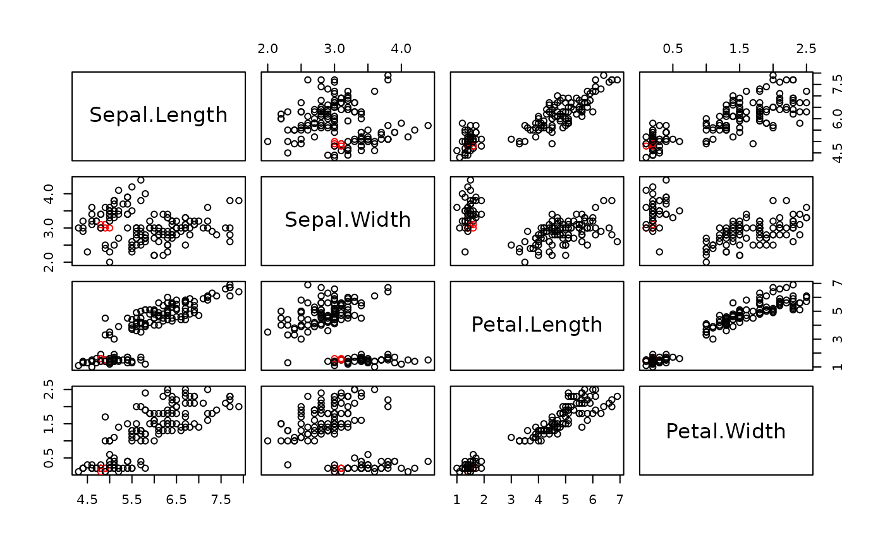
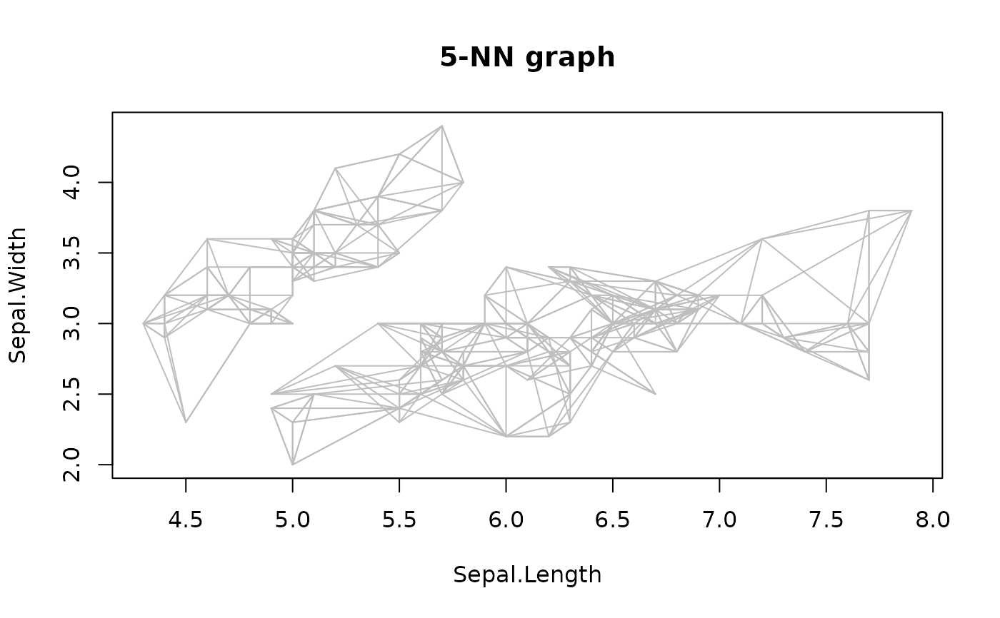
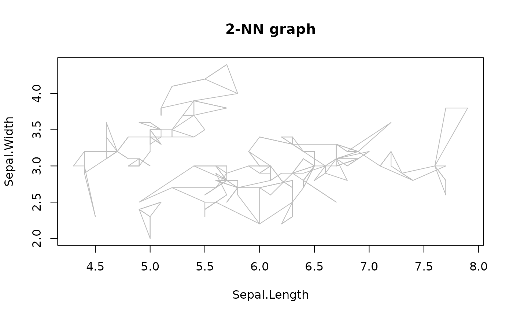
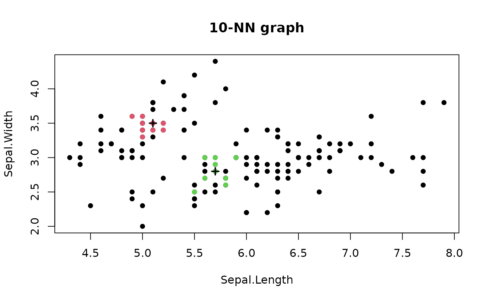
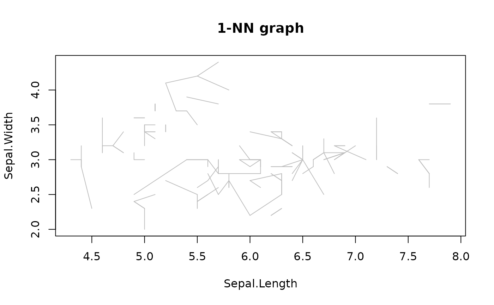

This function uses a kd-tree to find all k nearest neighbors in a data matrix (including distances) fast.
Usage
kNN(
x,
k,
query = NULL,
sort = TRUE,
search = "kdtree",
bucketSize = 10,
splitRule = "suggest",
approx = 0
)
# S3 method for class 'kNN'
sort(x, decreasing = FALSE, ...)
# S3 method for class 'kNN'
adjacencylist(x, ...)
# S3 method for class 'kNN'
print(x, ...)Arguments
- x
a data matrix, a dist object or a kNN object.
- k
number of neighbors to find.
- query
a data matrix with the points to query. If query is not specified, the NN for all the points in
xis returned. If query is specified thenxneeds to be a data matrix.- sort
sort the neighbors by distance? Note that some search methods already sort the results. Sorting is expensive and
sort = FALSEmay be much faster for some search methods. kNN objects can be sorted usingsort().- search
nearest neighbor search strategy (one of
"kdtree","linear"or"dist").- bucketSize
max size of the kd-tree leafs.
- splitRule
rule to split the kd-tree. One of
"STD","MIDPT","FAIR","SL_MIDPT","SL_FAIR"or"SUGGEST"(SL stands for sliding)."SUGGEST"uses ANNs best guess.- approx
use approximate nearest neighbors. All NN up to a distance of a factor of
1 + approxeps may be used. Some actual NN may be omitted leading to spurious clusters and noise points. However, the algorithm will enjoy a significant speedup.- decreasing
sort in decreasing order?
- ...
further arguments
Value
An object of class kNN (subclass of NN) containing a
list with the following components:
- dist
a matrix with distances.
- id
a matrix with
ids.- k
number
kused.- metric
used distance metric.
Details
Handling of ties and self-matches
Ties: If the kth and the (k+1)th nearest neighbor are tied, then the neighbor found first is returned and the other one is ignored.
Self-matches: If no query is specified, then self-matches are removed.
Details on the search parameters:
searchcontrols if a kd-tree or linear search (both implemented in the ANN library; see Mount and Arya, 2010). Note, that these implementations cannot handle NAs.search = "dist"precomputes Euclidean distances first using R. NAs are handled, but the resulting distance matrix cannot contain NAs. To use other distance measures, a precomputed distance matrix can be provided asx(searchis ignored).bucketSizeandsplitRuleinfluence how the kd-tree is built.approxuses the approximate nearest neighbor search implemented in ANN. All nearest neighbors up to a distance ofeps / (1 + approx)will be considered and all with a distance greater thanepswill not be considered. The other points might be considered. Note that this results in some actual nearest neighbors being omitted leading to spurious clusters and noise points. However, the algorithm will enjoy a significant speedup. For more details see Mount and Arya (2010).
References
David M. Mount and Sunil Arya (2010). ANN: A Library for Approximate Nearest Neighbor Searching, http://www.cs.umd.edu/~mount/ANN/.
Examples
data(iris)
x <- iris[, -5]
# Example 1: finding kNN for all points in a data matrix (using a kd-tree)
nn <- kNN(x, k = 5)
nn
#> k-nearest neighbors for 150 objects (k=5).
#> Distance metric: euclidean
#>
#> Available fields: dist, id, k, sort, metric
# explore neighborhood of point 10
i <- 10
nn$id[i,]
#> 1 2 3 4 5
#> 35 2 31 13 26
plot(x, col = ifelse(seq_len(nrow(iris)) %in% nn$id[i,], "red", "black"))

# visualize the 5 nearest neighbors
plot(nn, x)

# visualize a reduced 2-NN graph
plot(kNN(nn, k = 2), x)

# Example 2: find kNN for query points
q <- x[c(1,100),]
nn <- kNN(x, k = 10, query = q)
plot(nn, x, col = "grey")
points(q, pch = 3, lwd = 2)

# Example 3: find kNN using distances
d <- dist(x, method = "manhattan")
nn <- kNN(d, k = 1)
plot(nn, x)
